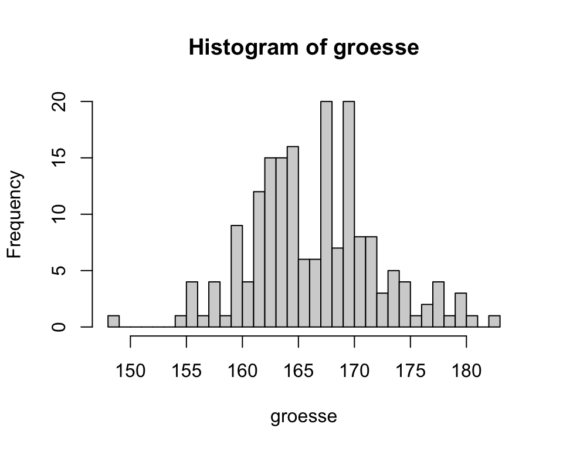

1 Deskriptive Statistik
Ein Bild sagt mehr als tausend Worte.
Jede statistische Analyse beginnt mit der Beschreibung und der Zusammenfassung der vorliegenden Daten. Es ist eine sehr gute Angewohnheit, Daten immer zuerst zu visualisieren, bevor man mit Berechnungen beginnt.
Angenommen, Sie analysieren die Körpergrösse von 100 Studierenden. Alleine durch die Berechnung des Mittelwerts (in diesem Fall \(\bar{x} = 177.7\)) würden Sie kaum merken, dass aus Versehen bei einer Person die Grösse in Meter und nicht in Zentimeter angegeben wurde. Durch die Visualisierung der Daten wird dieser Fehler hingegen schnell offensichtlich, wie Abbildung 1.1 zeigt (der korrekte Mittelwert ist \(\bar{x} = 179.5\) ).
In diesem Kapitel geht es darum, wie die verschiedenen Datentypen durch Grafiken und Kennzahlen zusammengefasst und präsentiert werden können.
1.1 Lernziele
Important
- Beschreibe Daten mit den Begriffen Beobachtungseinheit, Beobachtungsmerkmal (= Variable), Ausprägung von Beobachtungsmerkmalen.
- Unterscheide quantitative und qualitative Daten.
- Unterscheide bei quantitativen Daten zwischen kontinuierlichen (= stetigen) und diskreten Variablen.
- Unterscheide bei qualitativen Daten zwischen nominalen (= kategoriale) und ordinalen Variablen.
- Erwähne bei der Beschreibung von quantitativen Daten die Form der Verteilung und die Kennzahlen der Lage und der Streuung.
- Beschreibe die Verteilung einer Variable als symmetrisch, rechtsschief oder linksschief.
- Nenne Kennzahlen der Lage: Mittelwert \(\bar{x}\), Median \(m\) und Quartile.
- Nenne Kennzahlen der Streuung: Varianz \(s^2\), Standardabweichung \(s\), Variationsbreite
(= Spannweite) und Interquartilabstand (\(IQR\), engl. interquartile range).
- Verwende Histogramme und Boxplots um die Verteilung von quantitativen Daten zu visualisieren.
- Definiere robuste statistische Kennzahlen wie Median und IQR als Kennzahlen, die wenig von der Verteilungsform und von Extremwerten (Ausreissern) beeinflusst werden.
- Verwende Kreuztabellen und Balkendiagramme zur Beschreibung von qualitativen Daten (absolute und relative Häufigkeiten).
- Berechne die obenstehenden Statistiken in
R. - Erstelle Balkendiagramme, Histogramme und Boxplots in
R.
1.2 Grundbegriffe
Wir verwenden in diesem Kapitel einen Datensatz mit biometrischen Merkmalen von Studierenden.
Codebook zum Datensatz (Tabelle 1.1):
ID: Student:in
Kohorte: Jahrgang: 14, 15, 16, 17
Klasse: Klasse: 1, 2 (jede Kohorte wird aufgeteilt in zwei Klassen)
Geschlecht: Geschlecht: m = männlich, w = weiblich
Augenfarbe: Farbe: blau, grün, braun
Groesse: Körpergrösse in cm
Gewicht: Körpergewicht in kg
Statistik: Interesse am Fach Statistik \(^a\)
Geschwister: Anzahl Geschwister
\(^a\) Frage: “Statistik interessiert mich”
Auswahlitems:
1 trifft nicht zu
2 trifft kaum zu
3 trifft etwas zu
4 trifft eher zu
5 trifft sehr zu
| ID | Kohorte | Klasse | Geschlecht | Augenfarbe | Groesse | Gewicht | Statistik | Geschwister |
|---|---|---|---|---|---|---|---|---|
| 1 | 14 | 2 | w | blau | 170 | 62 | 3 | 1 |
| 2 | 14 | 1 | w | gruen | 160 | 56 | 2 | 2 |
| 3 | 14 | 1 | w | blau | 169 | 68 | 2 | 1 |
| 4 | 14 | 1 | m | blau | 182 | 70 | 2 | 3 |
| 5 | 14 | 1 | w | gruen | 173 | 73 | 2 | 0 |
In der Statistik beobachten wir typischerweise verschiedene (Beobachtungs-)Merkmale, wie das Geschlecht, die Körpergröße oder die Zugehörigkeit zu einer Klasse, an Beobachtungseinheiten, im vorliegenden Fall an Studierenden (in einem Laborversuch könnte eine Beobachtungseinheit z.B. auch eine Maus sein). Solche Merkmale bezeichnen wir als Variablen und die Werte, welche die Variablen annehmen können als Merkmalsausprägungen.
Bei der Datenerhebung in Studien werden die Daten in Tabellen erfasst. In diesen Datentabellen (Datensätzen) wird für jedes erhobene Merkmal eine separate Spalte erstellt. Jede Beobachtungseinheit wird in einer separaten Zeile erfasst, in der die jeweilige Ausprägung der Merkmale eingetragen wird. Zwar kann es sein, dass diese Datenstruktur für gewisse Analysen verändert wird, sie stellt aber die Grundform der Daten dar. Sie erhalten Datensätze für Übungen grundsätzlich immer in diesem Format als csv-Datei. Ein Fehler der häufig gemacht wird, ist der, dass pro Zelle mehr als eine Ausprägung erfasst wird, was die spätere Auswertung der Daten erheblich erschwert oder sogar unmöglich macht (Wickham 2014).
Hinweise zur Notation: In der Regel werden für die Bezeichnung einer Variablen Grossbuchstaben gebraucht und für deren Ausprägungen Kleinbuchstaben. Wenn eine Variable \(X\) aus den möglichen Werten 1, 2 und 3 besteht, dann schreiben wir \(X = \{1,2,3\}\). Man nennt diese Menge den Träger von \(X\). Eine Stichprobe mit Grösse \(n\) schreiben wir dann \(\{X_1=x_1,X_2=x_2,...,X_n=x_n\}\) (\(n\) “Realisierungen” von \(X\)), z.B. \(\{X_1=2,X_2=2,X_3=3...,X_n=1\}\). Grosse \(X\) stehen hier für Zufallsvariablen, kleine \(x\) für die konkrete oder realisierte Stichprobe.
1.3 Quantitative und qualitative Daten
Als erste Eigenschaft unterscheiden wir zwischen qualitativen und quantitativen Variablen, je nachdem, welche Werte die Variable annehmen und wie man mathematisch damit umgehen kann.
Quantitative Variablen sind Beobachtungsmerkmale, die wir durch Messen oder Zählen ermitteln. Mit quantitativen Daten können wir sinnvolle mathematische Operationen durchführen, wie z.B. einen Durchschnitt bestimmen.
Bei quantitativen Daten unterscheiden wir zwei Unterkategorien:
quantitativ-kontinuierliche Variablen werden durch Messung erhoben. Sie werden auch als numerische oder stetige Variablen bezeichnet. Im stud-Datensatz sind
Groesse,GewichtundSchuhgroessekontinuierliche Variablen. InRwerden solche Variablen alsnumericklassifiziert.# Mit dem Befehl class() kann der in R hinterlegte Datentyp abgefragt werden class(df.stud$Groesse)[1] "numeric"
quantitativ-diskrete Variablen werden durch Zählen erhoben. Sie können nur ganzzahlige Werte annehmen. Beispiele sind Anzahl roter Blutkörperchen pro ml Blut oder die Anzahl Geschwister einer Person. Ganzzahlige Werte werden in
Ralsintegerklassifiziert. Im stud-Datensatz ist die Variable Geschwister quantitativ-diskret skaliert.class(df.stud$Geschwister)[1] "integer"
Qualitative Variablen sind Beobachtungsmerkmale, die wir nicht durch messen oder zählen, sondern durch direkte Anschauung ermitteln. Qualitative Daten lassen sich nicht sinnvoll addieren oder subtrahieren, d.h. wir können z.B. keinen Durchschnitt wie bei quantitativen Daten berechnen. Qualitative Daten eignen sich jedoch für Vergleiche, z.B. für den Vergleich der durchschnittlichen Körpergrösse von Männern und Frauen.
Auch bei qualitativen Daten unterscheiden wir zwei Unterkategorien:
- qualitativ-nominal: Die Variable gibt eine Gruppenzugehörigkeit an. Im stud- Datensatz sind die Variablen
ID,Kohorte,Klasse,AugenfarbeundGeschlechtdiesem Variablentyp zuzuordnen.
- qualitativ-ordinal: Bei diesem Typ sind die Kategorien, im Gegensatz zu nominalen Daten, logisch geordnet, wie z.B. der Schweregrad einer Krankheit oder die Antworten „stimme nicht zu”, „stimme teilweise zu”, „stimme zu” in einer Umfrage. Im stud-Datensatz entspricht die Variable
Statistikdiesem Variablentyp.
In R empfiehlt es sich, qualitative Variablen als sogenannte Faktoren (factor) zu hinterlegen, wobei bei ordinalen Daten zusätzlich die Reihenfolge definiert werden muss.
class(df.stud$Geschlecht)[1] "factor"# Beispiel, wie man die Reihenfolge bei ordinalen Variablen definiert
x <- factor(df.stud$Statistik, levels = c(1,2,3,4,5), labels = c("trifft nicht zu",
"trifft kaum zu",
"trifft etwas zu",
"trifft eher zu",
"trifft sehr zu"))
table(x)x
trifft nicht zu trifft kaum zu trifft etwas zu trifft eher zu trifft sehr zu
3 52 82 39 5 1.4 Quantitative Daten zusammenfassen
Mit Hilfe von Kennzahlen lassen sich Variablen zusammenfassen. Kennzahlen der zentralen Tendenz (Lagemasse) geben Auskunft über den “Schwerpunkt” einer Variablen und Kennzahlen der Streuung vermitteln uns einen Eindruck darüber, wie die Variablenwerte um diesen Schwerpunkt verteilt sind. In vielen Fällen sind Grafiken (engl. plots) einfacher lesbar als umfangreiche Tabellen.
1.4.1 Kennzahlen der Lage (Lagemasse)
1.4.1.1 Mittelwert
Das gebräuchlichste Lagemass ist der Mittelwert (auch Durchschnitt). Der Mittelwert ist derjenige Wert, der die Daten auf einer „Waage” ausbalanciert. Wir nehmen dabei an, dass die Waage kein Gewicht hat und alle Beobachtungen gleich schwer sind. Weit entfernte Beobachtungen haben eine starke „Hebelkraft”, also einen starken Einfluss auf den Mittelwert.
Sei \(X\) eine Variable mit \(n\) Beobachtungen \(\{x_1, x_2,..., x_n\}\). Der empirische oder arithmetische Mittelwert (engl. mean) von diesen \(n\) Werten von \(X\) ist
\[ \bar{x} = \frac{(x_1 + x_2 + ... + x_n)}{n} = \frac{1}{n} \sum_{i=1}^n x_i = n^{-1} \sum_{i=1}^n x_i . \]
Hinweise: der Index \(_i\) unter dem Summenzeichen \(\Sigma\) in der Formel ist ein Platzhalter für die “Nummer” alle Werte, das heisst, man summiert alle Werte von \(i = 1\) bis \(i = n\) auf. Diese Schreibweise hat den Vorteil, dass sie für alle Variablen gilt, egal welcher Wert \(n\) hat. Sie werden dieser Schreibweise noch einige Male begegnen.
In Abbildung 1.2 ist erkennbar, dass wenn die zwei höchsten Werte aus der Abbildung links nach rechts verschoben werden, also höhere Werte annehmen, sich auch der Mittelwert nach rechts verschiebt und somit grösser wird.
Den Mittelwert einer Variable in R berechnen:
# Daten generieren
x <- c(2, 2, 3, 3, 4)
# Mittelwert von x berechnen
mean(x)[1] 2.8# Umgang bei fehlenden Werten
x <- c(2, 2, 3, 3, 4, NA)
mean(x, na.rm = TRUE)[1] 2.81.4.1.2 Median
Der Median beschreibt die „Mitte”, den „50 %-Punkt” der Daten. Als Spezialfall eines Quantils (siehe Section 1.4.1.3) ist der Median definiert als ein Wert, der die Daten in zwei gleiche Hälften teilt, als der Wert mit 50% kumulierter relativer Häufigkeit.
Bestimmung des Medians:
- Gegeben ist eine konkrete Stichprobe einer Variablen \(X\): \(\{X_1=3, X_2=2, X_3=2, X_4=2, X_5=4\}\)
- Werte der Stichprobe nach Grösse sortieren (das heisst, die Variable muss mindestens ordinalskaliert sein): \(2, 2, 2, 3, 4\)
- Der Wert, der die Zahlenreihe halbiert ist der Median: \(Median = 2\)
Wenn die Variable eine geradzahlige Anzahl an Werten hat, bestimmen wir das arithmetische Mittel der beiden mittleren Werte:
- Stichprobe aus \(X\): \(\{3, 2,2,2,4,4\}\)
- Werte nach Grösse sortieren: \(2, 2, 2, 3, 4, 4\)
- Die beiden mittleren Werte sind \(2\) und \(3\), das arithmetische Mittel ist 2.5, d.h. \(Median = 2.5\)
Den Median einer Variable in R berechnen:
# Daten generieren
x <- c(2, 2, 2, 3, 4)
# Median von x berechnen
median(x)[1] 2# Höchsten Wert von x erhöhen
x <- c(2, 2, 2, 3, 20)
# Median von x berechnen
median(x) [1] 2# Variable x mit geradzahliger Anzahl an Werten
x <- c(3, 2, 2, 2, 4, 4)
# Median von x berechnen
median(x) [1] 2.5Einfluss extremer Werte auf den Median:
Abbildung 1.3 zeigt, dass eine Verschiebung der beiden höchsten Werte in der Abbildung links keinen Einfluss auf den Median hat. Die Eigenschaft, dass eine Kennzahl oder Methode nicht stark von einzelnen Werten abhängt, bezeichnet man als robust.
Merke: Der Mittelwert ist empfindlich für Extremwerte, der Median hingegen ist robust.
Mittelwert oder Median
Die Auswahl der Kennzahl der Lage ist abhängigig davon, wie die Daten verteilt sind und welchen Aspekt der Verteilung mit der Kennzahl dokumentiert werden soll.
Wir illustrieren das am Beispiel der Verteilung des monatlichen Einkommens von Schweizer Frauen im Jahr 2018 (Quelle: Bundesamt für Statistik).
Das monatliche Einkommen ist rechtsschief verteilt. Es beträgt im Durchschnitt CHF 4600.-, der Median liegt mit CHF 4000.- um CHF 600.- (13%) tiefer. Der Mittelwert ist vergleichsweise hoch, weil einige wenige sehr gut verdienende Personen diesen “nach oben” ziehen. Für die Einzelperson hat daher der Mittelwert wenig Aussagekraft, informativer ist für diese der Median. Die Steuerbehörde interessiert sich eher für den Mittelwert, der es z.B. erlaubt, das totale Einkommen der Stadt und die zu erwartenden Steuern zu berechnen.
Ob zur Charakterisierung einer Variablen der Mittelwert oder Median verwendet werden soll, ist von den Antworten auf die folgenden Fragen abhängig:
- Soll ein typischer (Median) oder durchschnittlicher (Mittelwert) Wert als Repräsentant der Variablen angegeben werden.
- Was hat die Verteilung für eine Form? Ist sie schief oder symmetrisch?
- Welche inferenzstatistischen Auswertungsmethoden werden für die Variable gewählt? Wenn parametrische Verfahren (t-Tests) durchgeführt werden wird eher der Mittelwert angegeben, wenn nicht-parametrische Verfahren (Rangtests) durchgeführt werden wird eher der Median berichtet.
1.4.1.3 Quantile
Quantile (auch Perzentile) sind Hilfsmittel zur Beschreibung der Verteilung von Daten. Die Definition für ein Quantil ist etwas schwerfällig:
Das \(\alpha\)-Quantil ist der Wert, bei dem \(\alpha*100\%\) der Werte kleiner und \((1-\alpha)*100\%\) der Werte grösser sind.
Einfacher geht es mit einem Beispiel: Uns interessiert, wo die Grenze zwischen dem unteren und dem mittleren Drittel beim Einkommen von Frauen in der Schweiz liegt. Das bedeutet, wir müssen das 33%-Quantil der Einkommensverteilung bestimmen.
# 33. Quantil berechnen
quantile(einkommen$Einkommen, .33)33%
3 Interpretation: Wir erhalten für das 33%-Quantil den Wert 3. Die Angaben sind jeweils mit 1000 zu multiplizieren. Die 33% Frauen mit dem niedrigsten monatlichen Einkommen verdienen zwischen 0 und 3000 CHF.
Quartile sind spezielle Quantile, welche eine Variable in vier gleiche Teile unterteilen. Das 1. Quartil (auch unteres Quartil) ist das 25%-Quantil, das 2. Quartil ist das 50%-Quantil (also der Median) und das 3. Quartil (auch oberes Quartil) ist das 75%-Quantil.
# Quartile berechnen
quantile(einkommen$Einkommen, c(.25, .5, .75))25% 50% 75%
3 4 6 Intepretation:
- 25% der Frauen verdienen CHF 3000.- oder weniger
- 25% der Frauen verdienen zwischen CHF 3000.- und 4000.-.
- 25% der Frauen verdienen zwischen CHF 4000.- und 6000.-.
- 25% der Frauen verdienen CHF 6000.- oder mehr.
1.4.2 Exkurs: Der Mittelwert als Kleinst-Quadrat-Modell
Im Hinblick auf das Streuungsmass Varianz und später erläuterte statistische Methoden (insbesondere die lineare Regression) wird hier ergänzend ein etwas anderes Konzept des Mittelwerts vorgestellt.
Beispiel: Wie viele Freunde haben Statistik-Lehrer?
Aus einer kleinen Umfrage liegen uns die Daten für fünf Statistiklehrer vor:
| ID | Freunde |
|---|---|
| 1 | 1 |
| 2 | 2 |
| 3 | 3 |
| 4 | 3 |
| 5 | 4 |
Aus Abbildung 1.5 schätzen wir den Mittelwert. Als erstes entscheiden wir uns für einen Mittelwert \(\bar{x} = 2\)
Die horizontale schwarze Linie gibt unseren geschätzen Mittelwert von \(\bar{x} = 2\) an. Die roten Linien geben den Abstand zum Mittelwert an. Die Länge der Linien gibt die Grösse des Fehlers \(e\) an, um den unser geschätzter Mittelwert jeden einzelnen Messpunkt unter- oder überschätzt. Die Summe der Grösse der Fehler \(e\) ergibt den gesamten Fehler in unserem Modell. Es hat sich in der Statistik allerdings als Standard etabliert, dass nicht die Summe der einfachen Fehler \(e\) , sondern die Summe der quadrierten Fehler \(e^2\) berücksichtigt wird. Dies, weil damit einerseits negative Werte für Fehler, welche die Fehlersumme fälschlicherweise zu klein erscheinen lassen, vermieden werden und andererseits grosse Fehler das System “bestrafen.” (Durch das Quadrieren werden Fehler die kleiner als 1 sind noch kleiner, z.B. \(0.5^2 = 0.25\) und Fehler die grösser als 1 sind, erhalten ein grösseres Gewicht, z.B. \(2^2 = 4\).)
| ID | Freunde | Est | e | e_sq |
|---|---|---|---|---|
| 1 | 1 | 2 | -1 | 1 |
| 2 | 2 | 2 | 0 | 0 |
| 3 | 3 | 2 | 1 | 1 |
| 4 | 3 | 2 | 1 | 1 |
| 5 | 4 | 2 | 2 | 4 |
Wir addieren aus Tabelle 1.3 die Werte der quadrierten Fehler \(e^2\) (= e_sq) und erhalten für unser Modell mit \(\bar{x} = 2\) eine Fehlerquadratsumme von 7. Wir können jetzt unseren Fehler mit der Zahl 7 quantifizieren.
Vielleicht gibt es aber einen besseren Mittelwert und als nächstes schätzen wir einen Mittelwert \(\bar{x} = 4\) (wir wissen, dass das nicht stimmen kann, es geht um das Verständnis des Konzepts). Wiederum berechnen wir die Fehlerquadratsumme.
| ID | Freunde | Est | e | e_sq |
|---|---|---|---|---|
| 1 | 1 | 4 | -3 | 9 |
| 2 | 2 | 4 | -2 | 4 |
| 3 | 3 | 4 | -1 | 1 |
| 4 | 3 | 4 | -1 | 1 |
| 5 | 4 | 4 | 0 | 0 |
Bei einem geschätzten Mittelwert \(\bar{x} = 4\) ergibt sich gemäss Tabelle 1.4 eine Fehlerquadratsumme von 15.
Jetzt setzen wir den wahren Mittelwert \(\bar{x} = 2.6\) ein und machen das ganze noch einmal.
| ID | Freunde | Est | e | e_sq |
|---|---|---|---|---|
| 1 | 1 | 2.6 | -1.6 | 2.56 |
| 2 | 2 | 2.6 | -0.6 | 0.36 |
| 3 | 3 | 2.6 | 0.4 | 0.16 |
| 4 | 3 | 2.6 | 0.4 | 0.16 |
| 5 | 4 | 2.6 | 1.4 | 1.96 |
Der arithmetische Mittelwert ergibt eine Fehlerquadratsumme von 5.2 (Tabelle 1.5). Dieser Wert ist kleiner als die Fehlerquadratsumme für die beiden anderen Lagemasse und wir halten fest:
Der Mittelwert einer Variable ist der Wert, der die Fehlerquadratsumme minimiert.
Grafisch dargestellt:
Der arithmetische Mittelwert \(\bar{x} = 2.6\) entspricht der Stelle, an der die Summe der quadrierten Fehler minimal ist \(\sum{e_i} = 5.2\).
Das Verfahren der Bestimmung der Fehlerquadratsumme ist ein grundlegendes Prinzip in der Statistik, das bei zahlreichen Verfahren zum Einsatz kommt.
1.4.3 Kennzahlen der Streuung (Streuungsmasse)
Lagemasse beschreiben einen Aspekt einer Stichprobe oder einer Verteilung. Abbildung 1.10 verdeutlicht, dass Lagemasse nicht ausreichen, um eine Verteilung genügend zu charakterisieren. Beide Stichproben haben einen Mittelwert von 0 (senkrechte Linie), trotzdem würden wir nicht behaupten, dass sie aus der gleichen Verteilung stammen: Die Beobachtungen in der oberen Stichprobe „streuen” mehr, sie sind im Mittel weiter weg vom Mittelwert. Kennzahlen der Streuung quantifizieren diese Eigenschaft.
Varianz
Die Varianz einer Stichprobe (engl. variance) ist die mittlere quadratische Abweichung der Beobachtungen vom Mittelwert:
\[s^2=\frac{(x_1-\bar{x})^2 + (x_2-\bar{x})^2+...+(x_n-\bar{x})^2}{n-1} = \frac{1}{n-1} \sum_{i=1}^n (x_i-\bar{x})^2\]
Um die Variabilität der Stichprobe in einer Zahl zusammenzufassen, wäre man auf den ersten Blick versucht, die Abweichungen \(x_1-\bar{x}, ..., x_n-\bar{x}\) der Beobachtungen vom Mittelwert zu mitteln. Dies würde allerdings bedeuten, dass sich positive und negative Abweichungen gegenseitig aufheben, und die „Varianz” wäre dann 0. Dieses Vorgehen ist deshalb ungeeignet. Werden die Abweichungen \(x_i-\bar{x}\) jedoch quadriert, dann gehen sie alle positiv in die Summe ein, d. h., eine gegebene Abweichung vom Mittelwert nach unten trägt gleichviel bei wie die identische Abweichung vom Mittelwert nach oben. Die Verwendung von \(n-1\) als Nenner hat einen theoretischen Hintergrund, auf den an dieser Stelle nicht eingegangen wird (die Herleitung ist mathematisch komplex, siehe z.B. Wikipedia).
Berechnung der Varianz einer Variablen \(X\) in R
# Variable x erzeugen
x <- c(1, 1, 2, 3, 4, 4, 4, 5)
# Varianz von x berechnen
var(x)[1] 2.285714Standardabweichung \(s\)
Gemäß ihrer Definition wird die Varianz \(s^2\) im Quadrat der Einheit der ursprünglichen Daten angegeben (bei der Körpergröße z. B. \(cm^2\) ). Um eine Kennzahl auf derselben Skala wie die Originaldaten zu erhalten, ist es gebräuchlich, die Wurzel aus der Varianz, die (empirische) Standardabweichung \(s\) (engl. standard deviation, SD) zu berechnen:
\[s=\sqrt{s^2}\]
Die Standardabweichung hat die gleiche Einheit wie die Originaldaten, beispielsweise bei der Körpergrösse sind es cm. In Abbildung 1.10 betragen die Standardabweichungen 1.18 für die blaue Stichprobe und 0.21 für die rote Stichprobe.
Berechnung der Standardabweichung einer Variablen \(X\) in R
# Variable x erzeugen
x <- c(1, 1, 2, 3, 4, 4, 4, 5)
# Standardabweichung von x berechnen
sd(x)[1] 1.511858# Standardabweichung als Quadratwurzel der Varianz berechnen
sqrt(var(x))[1] 1.511858Spannweite
Die Spannweite (engl. range), auch Variationsbreite, ist die Differenz zwischen Maximum und Minimum und gibt den Bereich an, in dem die Daten liegen.
\[Spannweite = Maximum - Minimum\]
Die Spannbreite wird nur durch die Extremwerte einer Stichprobe bestimmt und ist daher sehr empfindlich für Extremwerte und damit wenig robust.
Berechnung der Spannbreite einer Variablen \(X\) in R
# Variable x erzeugen
x <- c(1, 1, 2, 3, 4, 4, 4, 5)
# Spannweite von x berechnen
max(x) - min(x)[1] 4Interquartilsabstand
Der Interquartilsabstand (engl. interquartile range, IQR) ist die Differenz zwischen dem 75%- und dem 25%-Quantil. Der \(IQR\) umfasst die Spannweite der mittleren 50% der Daten.
Der IQR beschreibt die Länge der Box im Boxplot, welche die zentralen 50% der Daten umfasst.
Berechnung des IQR einer Variablen \(X\) in R
# Daten generieren
x <- c(19, 19, 20, 21, 21, 21, 22, 23, 23, 27, 27, 29, 29, 31)
# IQR für x berechnen
IQR(x)[1] 6# Quartile für x berechnen
quantile(x, c(.25, .75))25% 75%
21 27 1.4.4 Grafiken für quantitative Daten
Grafiken sind elementare Werkzeuge der Datenanalyse. Sie eignen sich auch dafür, Muster in den Daten einem grösseren Publikum vorzustellen. Mit geeigneten grafischen Darstellungen können die Eigenschaften einer Verteilung rasch beurteilt und mehrere Stichproben leicht miteinander verglichen werden.
Histogramm
Mit einem Histogramm wird die Verteilung von quantitativen Daten visualisiert. Dazu wird der Bereich der Daten in gleiche, anliegende aber sich nicht überlappende Intervalle (Klassen) zerlegt. Dann zählt man die Anzahl der Beobachtungen in jedem Intervall und erstellt ein Balkendiagramm.
Die Abbildung 1.11 zeigt vier Histogramme der gleichen Variablen (Körpergrösse von Studentinnen) mit unterschiedlichen Klassenbreiten: (A) Klassenbreite = 1, (B) Klassenbreite = 2, (C) Klassenbreite = 5 und (D) Klassenbreite = 10. Bei der Wahl der Klassenbreite muss man etwas “spielen” um ein aussagekräftiges Bild zu erhalten (oder aber man übernimmt den Vorschlag von R). Wählt man die Klassenbreite zu klein, entsteht ein zu detailliertes Bild, das keine gute Übersicht zulässt und Lücken aufweist; wählt man die Klassenbreite zu gross, verliert man zu viel an Detailinformation. Im Gegensatz zum weiter unten vorgestellten Balkendiagramm für qualitative Daten, bestehen zwischen den Balken eines Histogramms keine Lücken (ausser bei fehlenden Daten), da die x-Achse ein kontinuierliches Datenspektrum darstellt. Auch im Gegensatz zu Balkendiagrammen kann man die Reihenfolge der “Balken” in einem Histogramm nicht verändern, da diese an die x-Achse gebunden sind.
Am Histogramm beurteilen wir
- die Streubreite, d.h. die Variablilität der Daten.
- die Spitze (-n), d.h. die höchsten Gruppen von Balken.
- die Symmetrie, d.h. ob die Verteilung symmetrisch um ihren Mittelpunkt, links- oder rechtsschief ist.
Ein einfaches Histogramm in R erstellen
# Körpergrösse von 183 Studentinnen
groesse <- c(170, 160, 169, 173, 172, 170, 167, 175, 173, 169, 169, 169, 180, 164, 165, 168, 167, 156, 161, 170, 168, 170, 175, 165, 165, 164, 170, 170, 170, 171, 164, 168, 168, 170, 164, 170, 165, 172, 167, 164, 162, 172, 162, 168, 170, 165, 172, 162, 165, 174, 167, 168, 169, 164, 165, 162, 163, 165, 161, 157, 170, 171, 163, 171, 161, 164, 166, 164, 174, 164, 181, 168, 163, 169, 160, 160, 148, 163, 165, 155, 158, 174, 168, 163, 170, 178, 159, 170, 163, 171, 172, 171, 178, 163, 164, 176, 168, 170, 171, 173, 162, 156, 174, 165, 168, 165, 177, 168, 160, 165, 163, 170, 168, 168, 158, 163, 161, 165, 165, 168, 180, 162, 162, 162, 162, 174, 168, 160, 178, 160, 168, 162, 177, 180, 170, 172, 163, 168, 156, 166, 168, 171, 165, 166, 160, 169, 167, 171, 158, 156, 166, 164, 163, 175, 163, 166, 162, 163, 160, 168, 163, 164, 172, 166, 164, 162, 170, 183, 168, 170, 165, 172, 160, 164, 163, 179, 170, 158, 164, 167, 175, 178, 170)
# Die interessierende Variable ist groesse
hist(groesse)# mit dem Parameter breaks = kann die Anzahl der Klassen definiert werden
hist(groesse, breaks = 35)
# Anpassung der Beschriftung
hist(groesse,
main = "Körpergrösse von Studentinnen (n = 183)",
xlab = "Grösse (cm)",
ylab = "Anzahl")Boxplot
Boxplots sind ein weiteres grafisches Hilfsmittel, um die Verteilung von Daten zu visualisieren, verschiedene Gruppen oder Zeitpunkte zu vergleichen und auffällige Werte zu entdecken. Boxplots gehören zu den bevorzugten Grafiken, da sie eine grosse Menge an Informationen enthalten.
Die „Box” im Boxplot (engl. box and whiskers plot) gibt den Bereich vom 25%- zum 75%-Quantil an, der horizontale Strich in der Box den Median. Die Stäbe (engl. whiskers), die aus der Box herausragen, sind nicht einheitlich definiert. Bei einfachen Boxplots reichen sie zum Minimum und zum Maximum. Eine verbreitete Definition, die auf John W. Tukey zurückgeht, besteht darin, die Länge der Whiskers auf maximal das 1,5-fache der Boxlänge zu beschränken. Beobachtungen ausserhalb dieses Bereichs werden als Ausreisser gekennzeichnet.

Die Abbildung illustriert die Definitionen des Boxplots an der Grösse von 50 Frauen.
Am Boxplot beurteilen wir
- die Spannweite
- die Lage der zentralen 50% der Daten (IQR)
- die Lage des Medians
- die Verteilung der Daten.
Liegt der Median etwa in der Mitte zwischen dem 25%- und dem 75%-Quantil, können wir von einer symmetrischen Verteilung der Daten ausgehen. Liegt der Median näher am 25%-Quantil, spricht dies eher für eine rechtsschiefe Verteilung, liegt er näher am 75%-Quantil, spricht dies eher für eine linksschiefe Verteilung.
Boxplots eignen sich sehr gut für den Vergleich von Gruppen.

Die Abbildung 1.12 zeigt die Verteilung der Körpergrösse von Studentinnen und Studenten. Auf den ersten Blick ist erkennbar, dass die Studentinnen im Durchschnitt kleiner sind als die Studenten. Die Grösse bei den Frauen liegt etwa zwischen 148 cm (Minimum) und 183 cm (Maximum), bei den Männern etwa zwischen 169 cm und 198 cm. Der Median bei Frauen liegt bei 167.5 cm und bei Männern bei 180 cm. 50% der Frauen sind zwischen 163 cm und 170 cm gross (\(IQR = 7\)), 50% der Männer sind zwischen 175 cm und 189 cm gross (\(IQR = 9\)). Der Median liegt nicht exakt in der Mitte der Box und ist bei beiden Geschlechtern leicht zum 75%-Quantil verschoben, was ein Hinweis auf eine leicht linksschiefe Verteilung sein könnte.
Einen einfachen Boxplot in R erstellen
Wir verwenden den Datensatz PlantGrowth, der bereits mit R mitgeliefert wird. Er umfasst die Ergebnisse eines Experiments, das den Einfluss von zwei verschiedenen Düngern auf die Ernte einer Pflanze untersucht. Der Datensatz besteht aus zwei Variablen:
weight: Trockengewicht der Pflanzengroup: 3 Gruppen: ctrl = Kontrollgruppe, trt1 = Dünger 1, trt2 = Dünger 2- Jede Gruppe umfasst n = 10 Messungen.
# Datensatz laden
data("PlantGrowth")
# Boxplot für die Verteilung des Gewichts erstellen
boxplot(PlantGrowth$weight)# Boxplot für die Verteilung des Gewichts nach Gruppe erstellen
boxplot(weight ~ group, data = PlantGrowth) # Boxplot beschriften
boxplot(weight ~ group, data = PlantGrowth,
main = "Trockengewicht, n = 10 pro Gruppe",
xlab = "Gruppe",
ylab = "Gewicht (g)") # Extra: Boxplots einfärben
boxplot(weight ~ group, data = PlantGrowth,
main = "Trockengewicht, n = 10 pro Gruppe",
xlab = "Gruppe",
ylab = "Gewicht (g)",
col = c("blue", "green", "red")) Kumulative Häufigkeitsverteilung
Mit Hilfe einer kumulativen Häufigkeitsverteilung können Quantile noch genauer als mit einem Boxplot grafisch dargestellt werden. Auf der y-Achse befindet sich die kumulative relative Häufigkeit, auf der x-Achse der Wert der Variable.
In der Abbildung 1.13 sieht man leicht, dass 50% der Studentinnen unter dem \(median = 167\) sind und 50% darüber. In der Grafik lassen sich beliebige Quantile ablesen.
1.5 Qualitative Daten zusammenfassen
Bei diskreten Daten interessiert man sich für die Häufigkeiten der vorkommenden Kategorien. Diese Häufigkeiten können absolut (Anzahl) oder relativ (in Prozentzahlen) angegeben werden. Werden relative Häufigkeiten angegeben, sollten immer auch die absoluten Häufigkeiten dargestellt werden.
1.5.1 Kreuztabellen
Qualitative Daten können in einer Kreuztabelle (engl. contingency table) zusammenfassend dargestellt werden.
| Augenfarbe | n | Prozent |
|---|---|---|
| blau | 99 | 43.4 |
| braun | 78 | 34.2 |
| gruen | 51 | 22.4 |
| Total | 228 | 100.0 |
In Tabelle 1.6 sind die Augenfarben von 228 Studierenden in einer Kreuztabelle zusammengefasst. Die Spalte n gibt die absoluten Häufigkeiten an, die Spalte Prozent die relativen Häufigkeiten in Prozent.
| Augenfarbe | m | w | Summe |
|---|---|---|---|
| blau | 19 | 80 | 99 |
| braun | 12 | 66 | 78 |
| gruen | 14 | 37 | 51 |
| Total | 45 | 183 | 228 |
Bei der Berechnung von Prozentzahlen (relativen Häufigkeiten) gilt es immer genau zu überlegen, welche Anzahl als 100% festgelegt werden soll: Wir können Prozentzahlen bezüglich der Spalten- oder Zeilentotale der Tabelle 1.7 sowie der totalen Anzahl Beobachtungen in der Tabelle berechnen. Welche Zahlen berechnet werden sollen, hängt von der Fragestellung ab.
1.5.2 Balkendiagramme
Eine geeignete grafische Darstellung von Tabelle 1.6 ist ein Balkendiagramm. Da die x-Achse getrennte Kategorien bezeichnet, liegen die Balken nicht aneinander, sondern werden mit einem kleinen Abstand dazwischen gezeichnet. Theoretisch kann man die Anordnung der Balken auch verändern, da es ja keine logische Reihenfolge der Ausprägungen gibt.
Die Höhe der Balken entspricht der Anzahl Beobachtungseinheiten in einer Kategorie. Für jede Kategorie wird ein separater Balken erstellt.
Balkendiagramme in R erstellen
barplot(table(df.stud$Augenfarbe))Eine Alternative zu Balkendiagrammen sind Tortendiagramme. Allerdings sind Tortendiagramme visuell schwierig zu beurteilen, da das menschliche Auge Längenunterschiede besser beurteilen kann als Flächenunterschiede. Von Tortendiagrammen wird daher abgeraten.
In den Tortendiagrammen sind die Grössenunterschiede der fünf Kategorien kaum zu differenzieren, ganz im Gegensatz zu den Balkendiagrammen.
Hier noch ein nicht ganz ernst gemeintes Tortendiagramm:
1.6 Grundregeln für die Erstellung von Grafiken
Effektive Datenvisualisierungen sind die Voraussetzung jeder Datenanalyse, da sie allgemeine Muster in den Daten zeigen, was bei der reinen Betrachtung von Rohdaten nicht der Fall ist. Datenvisualisierungen werden von unserem Gehirn besser verarbeitet als einzelne Zahlen oder Zahlentabellen. Deshalb sind für die Präsentation von Daten Grafiken, wenn immer möglich, Zahlentabellen vorzuziehen. Mittels moderner Software kann eine Vielzahl von Grafiken erstellt werden, allerdings ist nicht jede Grafik auch eine gute Grafik. Die zahllosen Gestaltungsmöglichkeiten können schnell zur Erstellung von “fancy” Grafiken verleiten die zwar effektvoll aussehen, jedoch wenig bis keine Information über die Daten selbst vermitteln. Deshalb hier ein paar Grundregeln für die Erstellung von Grafiken für statistische Zwecke:
- Die Daten stehen im Mittelpunkt. Eine gute Grafik visualisiert die Daten und hilft dem Auge, Muster zu erkennen. Sie erleichtert die Beurteilung der Verteilung der Daten und den Vergleich von Messungen in verschiedenen Gruppen.
- Es sollen alle relevanten Informationen mit möglichst wenigen grafischen Elementen dargestellt werden.
- Keep it simple! Vermeide Ablenkung wie 3D-Effekte, Schatten, unnötige Farben, unruhige Hintergründe.
- Es soll klar ersichtlich sein, was dargestellt ist: Eine gute Grafik enthält
- Prägnante Überschrift oder Legende
- Achsenbeschriftungen, gegebenenfalls mit der Angabe von Einheiten
- Angaben zu Stichprobenumfang, Erhebungszeitpunkt, Gruppen
- Die Daten werden möglichst unverzerrt dargestellt.
In der linken Grafik in Abbildung 1.15 ist die Streuung der Daten zu den drei Messzeitpunkten leicht zu erkennen. Jeder blaue Punkt stellt eine Messung dar und wir erkennen, dass die Mehrheit der Punkte unter dem Mittelwert liegen. Der Boxplot zeigt die Verteilung der Daten und den Median, der rote Punkt gibt den Mittelwert an. Wir erkennen dass mit zunehmender Behandlungsdauer der durchschnittliche Serotoninspiegel ansteigt. Die rechte Grafik zeigt nur die Mittelwerte zu den drei Messzeitpunkten. Der Informationsgehalt dieser Grafik ist minimal.
Häufige Fehler bei der Erstellung von Grafiken für statistische Zwecke
- Mangelhafte Beschriftung (Achsenbeschriftungen fehlen oder sind ungenau, Stichprobenumfänge nicht angegeben, Titel fehlt)
- Skalenfehler wie z.B. unterschiedliche Skalen bei vergleichenden Grafiken, y-Achse beginnt nicht bei 0 bei Histogrammen oder Balkendiagrammen.
Beide Grafiken in Abbildung 1.16 visualisieren die Schlusskurse der Appleaktie (AAPL) im Jahr 2021. In der linken Abbildung ist die y-Achse ist auf den Datenbereich zwischen 115 und 165 beschränkt. Die Kursausschläge wirken extrem und suggerieren eine Verdoppelung des Aktienwerts zwischen der ersten und der zweiten Jahreshälfte. In der Abbildung rechts, beginnt die y-Achse bei 0 und die Ausschläge wirken eher moderat. Wenn es darum geht, absolute Unterschiede darzustellen, kann die linke Grafik durchaus Sinn machen. Wenn es jedoch wichtig ist, Grössenverhältnisse darzustellen, ist die rechte Grafik besser geeignet.
Geeignete Darstellungen von Daten
- für eine nominale Variable: Kreuztabelle, Balkendiagramm
- für eine quantitative Variable: Histogramm, Boxplot, Liniendiagramm
- Zusammenhang zwischen zwei nominalen Variablen: Kreuztabelle, gruppiertes Balkendiagramm
- Zusammenhang zwischen quantitativen Variablen: Streudiagramm
- Zusammenhang zwischen einer quantitativen Variablen und einer nominalen Variablen: Gruppierte Boxplots oder mehrere Histogramme (Achte auf gleiche Skalierung der Achsen).
Im Iris-Datensatz (Bestandteil von R) ist Species eine nominale Variable und die Länge der Kelchblätter Sepal.Length eine kontinuierliche Variable. Die Abbildung 1.17 zeigt zwei Möglichkeiten des Zusammenhangs: Links als gruppierter Boxplot und rechts als Histogramm.
1.7 Anhang: hilfreiche R Codes für die deskriptive Statistik
library(medicaldata)
df.sc <- supraclavicular # Dieser Datensatz befindet sich im Package medicaldata (info hier: https://www.causeweb.org/tshs/datasets/Supraclavicular%20Data%20Dictionary.pdf)
# Datensatz anschauen
View(df.sc) # Quasi "Excel-Ansicht" (Danach oben wieder ins Skript wechseln)
str(df.sc) # Zeigt die Grundstruktur des Datensatzes an (n, Anzahl Variablen, Variablennamen Skala und Ausprägungsgerade)
head(df.sc) # Zeigt die ersten 6 Zeilen des Datensatzes an
head(df.sc, 20) # Zeigt die ersten 20 Zeilen des Datensatzes an
tail(df.sc) # Zeigt die letzten 6 Zeilen des Datensatzes an
tail(df.sc, 3) # Zeigt die letzten 3 Zeilen des Datensatzes an
# Skala ändern
class(df.sc$gender) # Diese Variable ist momentan in R als "numeric" hinterlegt. Ein Faktor wäre besser...
df.sc$gender <- factor(df.sc$gender, levels = c(0, 1), labels = c("F", "M")) # Die Variable als Faktor festlegen
levels(df.sc$gender) # Nun stimmt es und die Reihenfolge der Levels stimmt (wurde oben mit levels = c() festgelegt)
# Einzelne Zeilen und Spalten (Variablen) auswählen
df.sc[1, ] # Zeigt die erste Zeile des Datensatzes an
df.sc[, 2] # Zeigt die zweite Spalte des Datensatzes an
df.sc$bmi # Zeigt die Variable "bmi" des Datensatzes an
# Neue Variable erstellen und dem Datensatz hinzufügen
df.sc$new_variable <- rep("x", nrow(df.sc)) # Diese Variale sagt natürlich nicht viel aus...
head(df.sc) # Die neue Variable wurde am Ende hinzugefügt
# Anzahl Zeilen und Spalten
ncol(df.sc) # Anzahl Spalten
nrow(df.sc) # Anzahl Zeilen
# Häufigkeitsverteilungen
table(df.sc$gender) # Absolute Häufigkeiten der Ausprägungsgerade einer Variable
n <- nrow(df.sc) # Anzahl Zeilen = Anzahl Personen
table(df.sc$gender)/n # Relative Häufigkeiten der Ausprägungsgerade einer Variable
# Kreuztabellen: Geschlecht nach Gruppe
table(df.sc$gender, df.sc$group)
# Häufigkeitsverteilungen graphisch darstellen
barplot(table(df.sc$gender)) # Balkendiagramm
#Histogramme
hist(df.sc$bmi)
hist(df.sc$bmi, probability = TRUE) # Y-Achse = relative statt absolute Häufigkeit
#Boxplots
boxplot(df.sc$opioid_total)
boxplot(df.sc$opioid_total, range = 0) # Ausreisser werden nicht separat angezeigt
# Summe einer Variable
sum(df.sc$opioid_total)
# Mittelwert einer Variable
mean(df.sc$bmi) # geht nicht weil fehlender Wert
mean(df.sc$bmi, na.rm = TRUE) # so geht es (gilt auch für andere Funktionen wie sd(), var(), usw.)
# Median
median(df.sc$bmi, na.rm = TRUE)
# Quantile
quantile(df.sc$bmi, na.rm = TRUE) # Standardmässig werden die Quartile angegeben (sollten mit dem Boxplot übereinstimmen)
quantile(df.sc$bmi, probs = c(0.05, 0.12, 0.189), na.rm = TRUE) # Bei Bedarf kann man die Quantile selbst definieren
# Minimum, Maximum, Range und Interquartilsabstand
min(df.sc$bmi, na.rm = TRUE)
max(df.sc$bmi, na.rm = TRUE)
range(df.sc$bmi, na.rm = TRUE)
IQR(df.sc$bmi, na.rm = TRUE)
# Varianz
var(df.sc$bmi, na.rm = TRUE)
# Standardabweichung
sd(df.sc$bmi, na.rm = TRUE)
# Kumulative Verteilung
n <- length(df.sc$opioid_total)
plot(sort(df.sc$opioid_total), (1:n)/n, type="l", ylim=c(0,1),
xlab = "Opioid consumption",
ylab = "Cumulative frequency")
# Subsets
df.sc.females <- subset(df.sc, gender == "F") # Teildatensatz erstellen (nur die übergewichtigen)
df.sc.females$gender
df.sc$opioid_total[df.sc$gender == "M"] # Opioidverbrauch der Männer